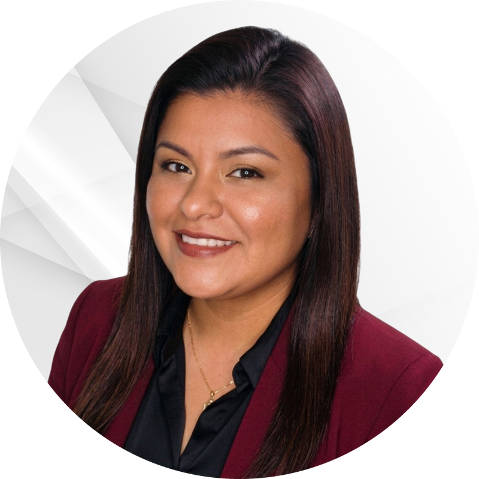

Para perfiles QA, QC, desarrollo y líderes
Aprende testing manual, automatización e IA generativa con ejemplos, herramientas y decisiones que sí encontrarás en un proyecto real.
Explorar capacitaciones →Capacito a profesionales y equipos en testing manual y automatizado, con un enfoque práctico en ChatGPT, Claude y Gemini aplicado al trabajo real de calidad.
Para empresas: diseño y mejora de fábricas QA, automatización, rendimiento, seguridad, procesos, gobernanza, frameworks y evolución continua.

AI Testing conecta formación práctica para profesionales con servicios especializados para empresas. La ruta se adapta al nivel, el equipo y el riesgo real del producto.
Aprende testing manual, automatización e IA generativa con ejemplos, herramientas y decisiones que sí encontrarás en un proyecto real.
Explorar capacitaciones →Fortalece tu fábrica de calidad, ordena procesos, reduce riesgos y construye capacidades sostenibles de testing e ingeniería QA.
Explorar servicios QA 360 →Integro personas, procesos, herramientas, métricas e IA para convertir la calidad en una capacidad medible, preventiva y alineada al negocio.
Desde el diagnóstico y el modelo operativo hasta la ejecución manual, automatización, pruebas no funcionales, gobierno, métricas y transferencia de conocimiento.
Planificación, diseño, ejecución, regresión, E2E, evidencias y gestión de defectos con cobertura basada en riesgo.
Estrategia, priorización, scripting, mantenimiento y ejecución continua con foco en retorno, estabilidad y reutilización.
Líneas base, carga, estrés, revisión OWASP, coordinación de Ethical Hacking y validación de remediaciones.
Modelo operativo, roles, políticas, métricas, gestión de proveedores, madurez y hoja de ruta de mejora continua.
Arquitectura de frameworks in-house, estándares, datos, trazabilidad e integración con pipelines para escalar automation.
Skills y soluciones para evaluar, depurar, reutilizar y preparar casos para automatización con ChatGPT, Claude y Gemini.
Recibe un puntaje de 0 a 100 y una orientación estándar basada en buenas prácticas ISTQB e ISO/IEC/IEEE 29119. Cuando necesites depuración, reutilización, automatización o exportación, QA Intelligent convierte el diagnóstico en un servicio especializado.
Buena base con oportunidades de reutilización.
Mi enfoque combina criterio funcional, automatización, gestión y formación para que el QA sea visible en decisiones y no se limite a un reporte de ejecución.
años liderando calidad de software
visión manual, técnica y de gobierno
industrias: banca, seguros y telecom
formación y servicios en español
Entiendo el producto, el equipo y la presión real del negocio.
Reviso procesos, activos, cobertura, herramientas y métricas.
Ordeno acciones por impacto, urgencia, esfuerzo y dependencia.
Dejo método, conocimiento y activos que el equipo puede sostener.
Programas para perfiles QA/QC, automatizadores, desarrolladores y líderes. Formación práctica, en español y conectada con situaciones reales de proyectos.
ISTQB, SDLC, técnicas de diseño, casos de prueba, defectos, trazabilidad, riesgo y comunicación efectiva.
Python, Selenium, Playwright, API testing, patrones, datos, mantenimiento e integración continua.
Prompts, análisis funcional, diseño, depuración, documentación y automatización asistida con criterio humano.
Madurez, métricas, estimación, proveedores, procesos, priorización y construcción de una capacidad QA sostenible.
Material pensado para convertir teoría en decisiones, conversaciones y entregables que puedas usar en tu trabajo.
Tres manuales: fundamentos, trabajo real y especialización. Incluyen casos, cobertura basada en riesgo y comunicación con equipos.
Estructura, datos, resultados y riesgo.
Estabilidad, frecuencia, valor y costo.
Calidad de entrada, revisión y gobernanza.
Riesgo, cobertura, escape y velocidad.
Soy Atenas Quintana Blas, Líder QA, Automatización y Rendimiento, estratega y formadora con más de ocho años de experiencia en industrias reguladas de Latinoamérica.
Fundé AI Testing Training & Services para unir capacitación, ingeniería e inteligencia artificial generativa en soluciones que puedan aplicarse de verdad.
Mi enfoque conecta testing manual, automatización, rendimiento, seguridad, procesos y gobierno para responder una pregunta clave: ¿qué riesgo reducimos y qué capacidad dejamos instalada?
Si tu situación necesita más contexto, escríbeme y definimos la mejor entrada: herramienta, capacitación o servicio profesional.
Rutas prácticas de testing manual, automatización web y API, IA generativa aplicada a QA, y liderazgo y gobernanza de calidad. Pueden dictarse para profesionales o adaptarse a una empresa.
Fábrica de testing manual, automatización, rendimiento, seguridad, procesos, gobernanza, frameworks, CI/CD y soluciones QA Intelligent con IA generativa.
No. Entrega un puntaje y una orientación estándar. QA Intelligent analiza contexto, riesgo, repositorio, duplicidad, reutilización, automatización y formato de destino.
Sí. Para profesionales hay formación, recursos y mentoría. Para empresas hay diagnóstico, estrategia, diseño, automatización, rendimiento, seguridad y acompañamiento.
Sí. En el servicio profesional se pueden revisar formatos estructurados y exportaciones para normalizar o preparar migraciones hacia Jira/Xray, TestRail y otros repositorios.
No. El trabajo puede realizarse de forma remota para profesionales y organizaciones de Latinoamérica.
No. Es una orientación basada en buenas prácticas. No constituye certificación, auditoría oficial ni declaración de conformidad.
Conversemos sobre el punto de entrada con mayor valor: formación, fábrica QA, automatización, rendimiento, seguridad, gobierno, frameworks o IA generativa.